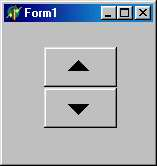
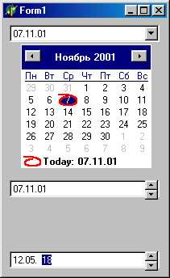
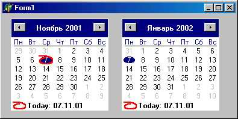

Ввод и отображение чисел, дат и времени
Таблица компонентов ввода и отображения чисел, дат и времени
|
|
Компонент |
Станица |
Описание |
|
1 |
UpDown (кнопка-счётчик) |
Win32 |
Кнопка-счётчик, в сочетании с компонентами Edit и другими позволяющая вводить цифровую информацию. Основное свойство - Position |
|
2 |
SpinEdit(кнопка-счётчик с окном редактирования) |
Samples |
Окно редактирования в сочетании с кнопкой-счётчиком. Почти то же, что комбинация Edit и UpDown Основное свойство - Value |
|
3 |
DateTimePicker(окно ввода дат и времени) |
Win32 |
Ввод даты (с выпадающим календарём) и времени. Основное свойство – Date и Time |
|
4 |
MonthCalendar(окно ввода дат) |
Win32 |
Ввод дат с выбором из календаря. Основное свойство - Date |
|
5 |
Calendar(календарь на указанный месяц) |
Samples |
Отображение календаря на указанный месяц . Основное свойство – Month и Day |
|
6 |
F1Book (страницы Excel) |
ActiveX |
Компонент ввода и обработки числовой информации, аналогичный страницам Excel |

Компонент TUpDown предназначен для регулирования числовой величины. Он имеет пару кнопок, с помощью которых величина наращивается или уменьшается. Обычно компонент TUpDown связан с другим компонентом класса TEdit, который отображает регулируемую величину и при необходимости может редактировать ее. Связанный компонент называется компаньоном.
Свойства компонента:
|
TUDAlignButton = (udLeft, udRight) ; property AlignButton: TUDAlignButton; |
Определяет положение компонента относительно компаньона: udLeft - TUpDown располагается слева от него; udRight - справа от него |
|
property Associate: TWinuontrol; |
Определяет связанный компонент. TupDown автоматически располагается с нужной стороны компаньона и выравнивает свою высоту с его высотой |
|
property Increment: Smallint; |
Определяет шаг наращивания/уменьшения регулируемой величины |
|
property Max: Smallint; |
Определяет максимальное значение диапазона изменения регулируемой величины |
|
property Min: Smallint; |
Определяет минимальное значение диапазона изменения регулируемой величины |
|
TUDOrientation = (udHorizontal, udVertical) ; property Orientation: TUDOrientation; |
Определяет ориентацию компонента: udHorizontal - по горизонтали; udVertical - по вертикали |
|
property Positior-.: Sallint; |
Содержит текущее значение регулируемой величины |
|
property Thousands: Boolean; |
Если содержит True, в отображение числовой величины в компаньоне вставляются разделители тысяч |
|
property Wrap: Boolean; |
Запрещает/разрешает выход position из диапазона Max...Min (True - запрещает) |
Для компонента определены события
type TUDChangingEvent = procedure (Sender: TObject;
var AllowChange: Boolean) of object;
property OnChar.ging: TUDChanginEvent;
И
type TUDBtnType = (btNext, btPrev) ;
type TUDClickEvent = procedure (Sender: TObject; Button:
TUDBtnType) ;
property OnClick: TUDClickEvent;
Первое возникает при любом изменении регулируемой величины. Обработчик события в параметре AllowChange сообщает, может ли величина измениться. Второе - при щелчке по кнопкам элемента. Параметр Button определяет нажатую кнопку: btprev - вниз или влево; btNext - вверх или вправо.
TSpinEdit - редактор для ввода целого числа
Компонент TSpinEdit предназначен для ввода/отображения числа. Он представляет собой комбинацию специализированного потомка однострочного редактора rcustomEdit и кнопок TSpinButton. Редактор способен вводить только числа (в этом и заключается его специализация), а кнопки используются для изменения числа на некоторую фиксированную величину.
Свойства компонента:
|
property Button: TSpinButton; |
Содержит ссылку на встроенный объект TSpinButton |
|
property EditorEnabled: Boolean; |
Разрешает/запрещает использовать редактор для ручного ввода числа |
|
property Increment: Longint; |
Содержит число, на которое будет изменяться свойство value при нажатии кнопок TSpinButton |
|
property MaxValue: Longint; |
Содержит верхнюю границу диапазона возможных значений value |
|
property MinValue: Longint; |
Содержит нижнюю границу диапазона возможных значений value |
|
property Value: Longint; |
Содержит текущее значение числовой величины |
TDateTimePicker - ввод и отображение даты/времени
Компонент предназначен для ввода и/или отображения даты или времени. Ниже показаны различные варианты использования компонента.

Примеры использования компонента TDateTimePicker
При показе даты в режиме DateMode=dmComboBox календарь можно не раскрывать и установить дату вручную в верхнем окне. Это удобно, если нужно установить сразу и день, и месяц, и год. На раскрытом календаре изменить месяц можно небольшими кнопками вверхней части компонента. Календарь закрывается после выбора даты или при щелчке по раскрывающей кнопке. Установив в свойство Kind значение dtkTime, можно заставить компонент отображать время (справа на рисунке). Это время в момент установки компонента на форму соответствует системному времени, и в дальнейшем его можно изменить, задав новое значение в свойство Time.
Свойства компонента:
|
TDTCalAlignment = (dtaLeft, dtaRight) ; |
Определяет положение раскрывающегося календаря: dtaLeft - слева от компонента; |
|
property CalAlignment: TDTCalAlignment; |
dtaRight - справа от компонента. Учитывается только ДЛЯ Kind = dtkDate и Date-Mode = dmComboBox |
|
property CalColors: TDateTimeColors; |
С календарем связан объект класса TDateTimeColors, свойства которого определяют цвета календаря |
|
property Checked: Boolean; |
Если Checked=True И ShowCheckBox=True, независимый переключатель рядом с датой (временем) будет иметь состояние Выбрано |
|
property Date: TDate;TDTDateFormat = (dfShort,dfLong) ; property DateFormat: TDTDateFormat; |
Содержит введенную дату Определяет формат показа даты: df short -08. 09. 99; dfLong-8 Сентябрь 1999г. |
|
TDTDateMode = (dmComboBox, dmUpDown) ; property DateMode: TDTDateMode; |
Определяет способ выбора даты: dmComboBox - с помощью раскрывающегося ка лендаря; dmUpDown - с помощью встроенного объекта TupDown |
|
property Format: String; |
Определяет формат вывода даты и времени (см. табл. 7.8 в гл. 7) |
|
TDateTimeKind = (dtkDate, dtkTime); property Kind: TDateTimeKind; |
Определяет содержимое компонента: dtkDate -дата; dtkTime - время |
|
property MaxDate: TDate; |
Определяет максимальную дату, которую может выбрать иди ввести пользователь |
|
property MinDate: TDate; |
Определяет минимальную дату, которую может выбрать или ввести пользователь |
|
property Parselnput: Boolean; |
Если True, возникает событие OnUserlnput при каждом вводе пользователя в окне редактора |
|
property ShowCheckbox: Boolean; |
Если True, рядом с датой (временем) вставляется независимый переключатель |
|
property Time: TTime; |
Содержит введенное пользователем время |
|
Для компонента определены следующие события: |
|
|
property OnChange: TNotifyEvent; |
Возникает при любом изменении содержимого компонента |
|
property OnCloseUp: TNotifyEvent; |
Возникает при закрытии календаря |
|
property OnDropDown: TNotifyEvent; |
Возникает при открытии календаря |
|
TParseInputEvent = procedure (Sender: TObject; const User-String: String” var DateAndTime: TDateTime; var AllowChange: Boolean) of objects-property OnUserInput: TDTParseIn-putEvent; |
Возникает при ручном вводе в окне редактора, если ParseInput=True.UserString -введенная пользователем строка; DateAndTime - значения свойств Date и Time. В параметре AllowChange обработчик разрешает или запрещает изменение даты или времени |

Как видно из рисунка слева, компонент предназначен для выбора или отображения даты. Он очень похож на календарь, который появляется В компоненте TDateTimePicker (при значении dmComboBox В свойстве DateMode), но в отличие от последнего может отображать одновременно несколько смежных месяцев - в зависимости от своих размеров.
Свойства компонента:
|
property CalColors: TMonthCalColors; |
С компонентом связан объект класса TMonthCalColors, имеющий такие свойства:BackColor - определяет цвет фона, разделяющего смежные месяцы; MonthBackColor- цвет фона дат; TextColor - цвет дат; TitIeBackColor - цвет фона заголовка месяца: TitleTextColor - цвет текста заголовка; TrailingTextColor - цвет текста ведущих и ведомых дат |
|
property Date: TDate; |
Определяет выбранную дату |
|
property EndDate: TDate; |
Определяет конечную дату диапазона вы бранных дат |
|
type TCalDayOfWeek = (dowMonday, dowTuesday, dowWednesday, dowThursday, dowFriday, dowSaturday, dowSunday, dowLocaleDefault) ; property FirstDayOfWeek: TCalDay OfWeek; |
Определяет первый день недели |
|
property MaxDate: TDate; |
Содержит максимальную дату, месяц которой еще будет доступен для отображения в компоненте. Если свойство содержит пустое значение, отображается любой следующий месяц |
|
property MaxSelectRange: Integer; |
Содержит максимальное количество дат в выбранном диапазоне |
|
property MinDate: TDate; property MultiSelect: Boolean; property ShowToday: Boolean; property ShowTodayCircle: Boolean; property WeekNumbers: Boolean; |
Содержит минимальную дату, месяц которой еще будет доступен для отображения в компоненте. Если свойство содержит пустое значение, отображается любой предыдущий месяц Разрешает/запрещает выбор диапазона дат Разрешает/запрещает показ текущей даты (по показаниям системных часов) внизу календаря Разрешает/запрещает обводить кружком текущую дату Разрешает/запрещает показ порядковых номеров недель от начала года в левой колонке |
TCalendar - ввод и отображение даты
Компонент TCalendar отображает календарь на выбранный месяц и год. Его свойства Day, Month и Year могут содержать любую дату от 1 до 9999 года от Рождества Христова.
Свойства компонента:
|
property CalendarDate: ~DateTime; property CellText[ACol, ARow: Integer]: String; property Day: Integer; property GridLineWidth: Integer; |
Содержит выбранную дату Содержит текст в ячейке календаря на пересечении столбца ACol с рядом ARow (только для чтения) Определяет выбранный день месяца |
|
property Month: Integer; property Readonly: Boolean; |
Устанавливает толщину линий таблицы календаря Определяет выбранный месяц Если содержит True, пользователь не может выбрать другую дату |
|
type TDayOfWeek = 0..6;property StartOfWeek: TSayOfWeek; |
Определяет день недели, который будет отображаться в самом левом столбце таблицы |
|
property UseCurrentDate: Boolean; |
Если содержит True, компонент будет показывать текущую системную дату |
|
property Year: Integer; |
Определяет выбранный год |
|
Методы компонента: |
|
|
procedure NextMonth; procedure NextYear; procedure PrevMonth; |
Показывает календарь на следующий месяц Показывает календарь на следующий год Показывает календарь на предыдущий месяц |
|
procedure PrevYear; |
Показывает календарь на предыдущий год |